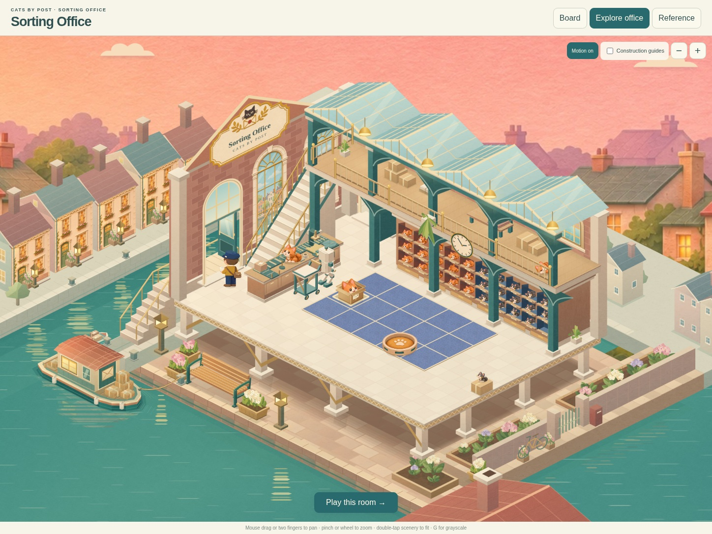
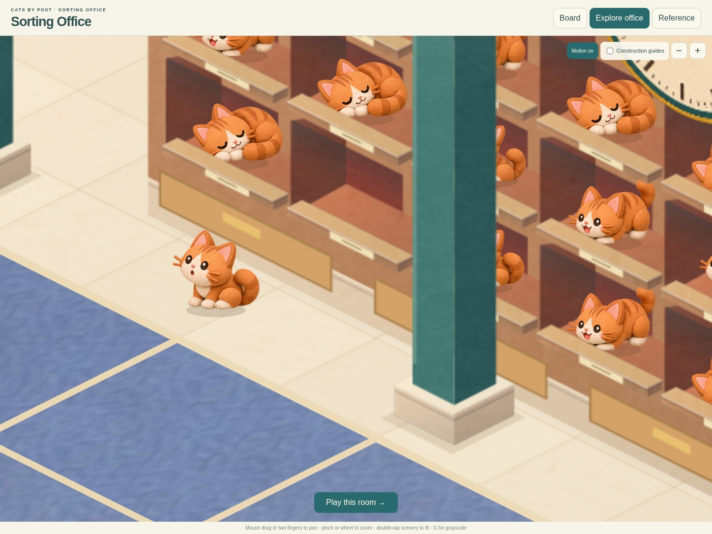
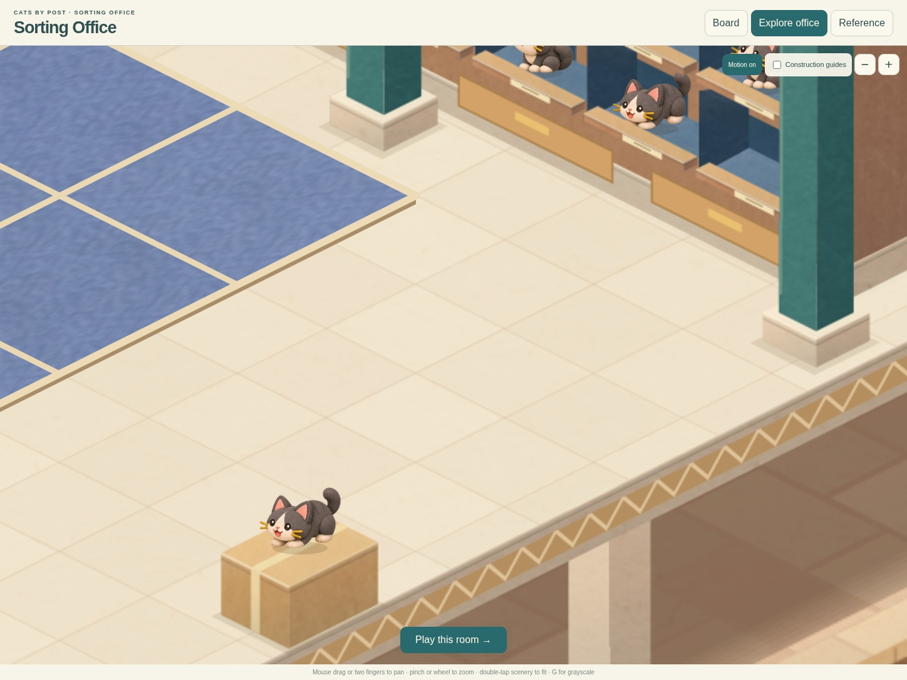
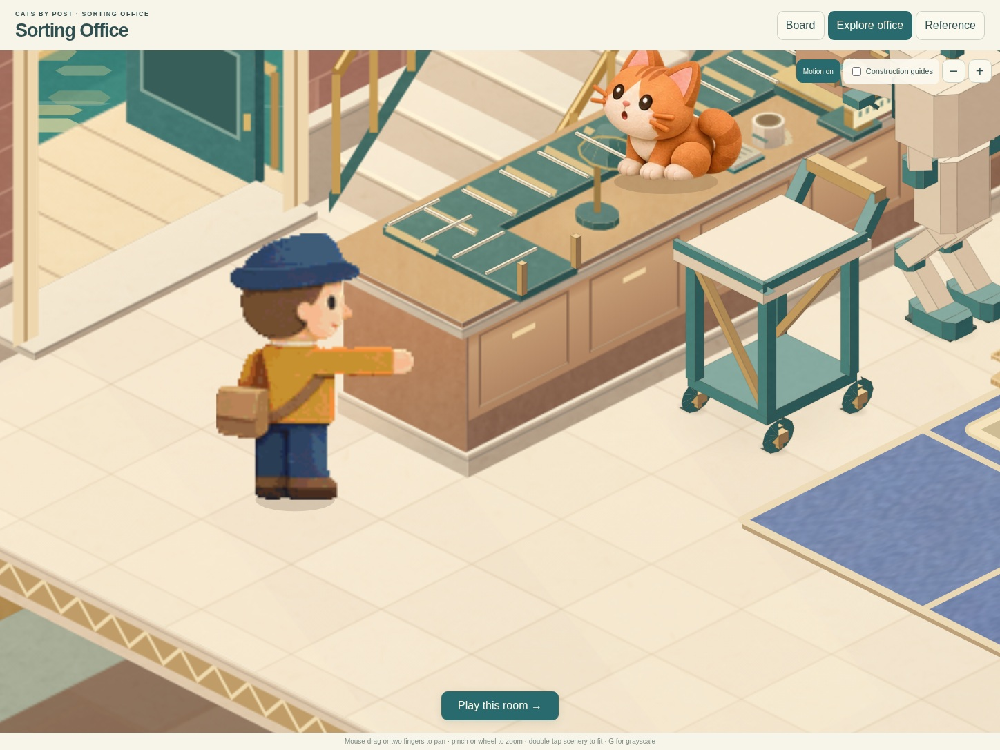
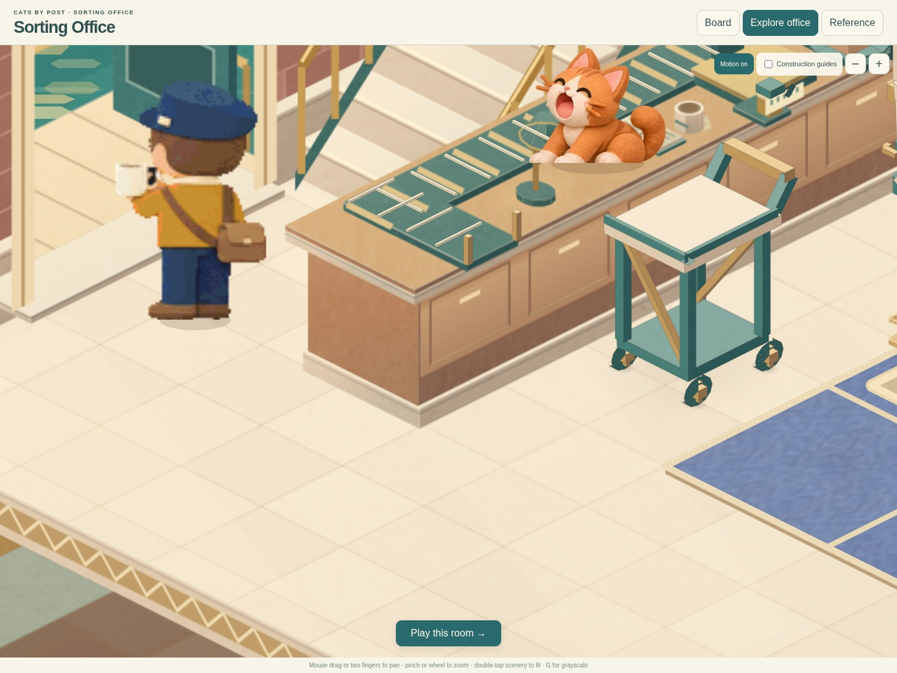
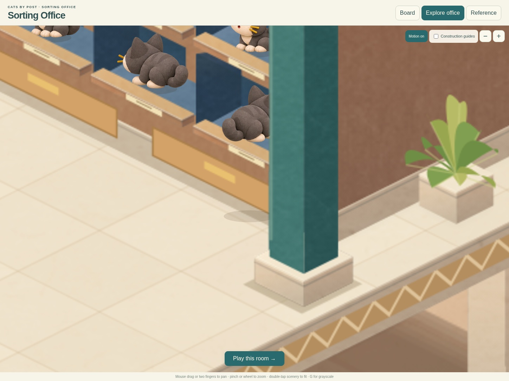
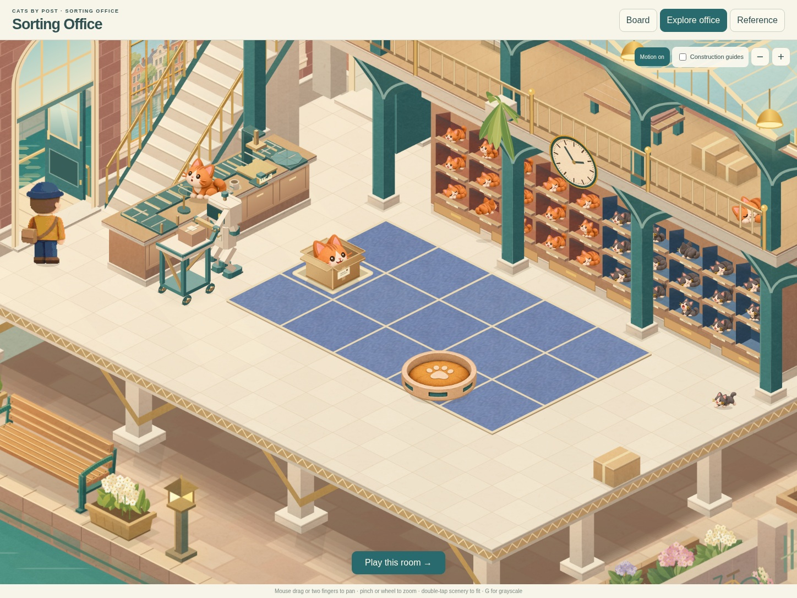
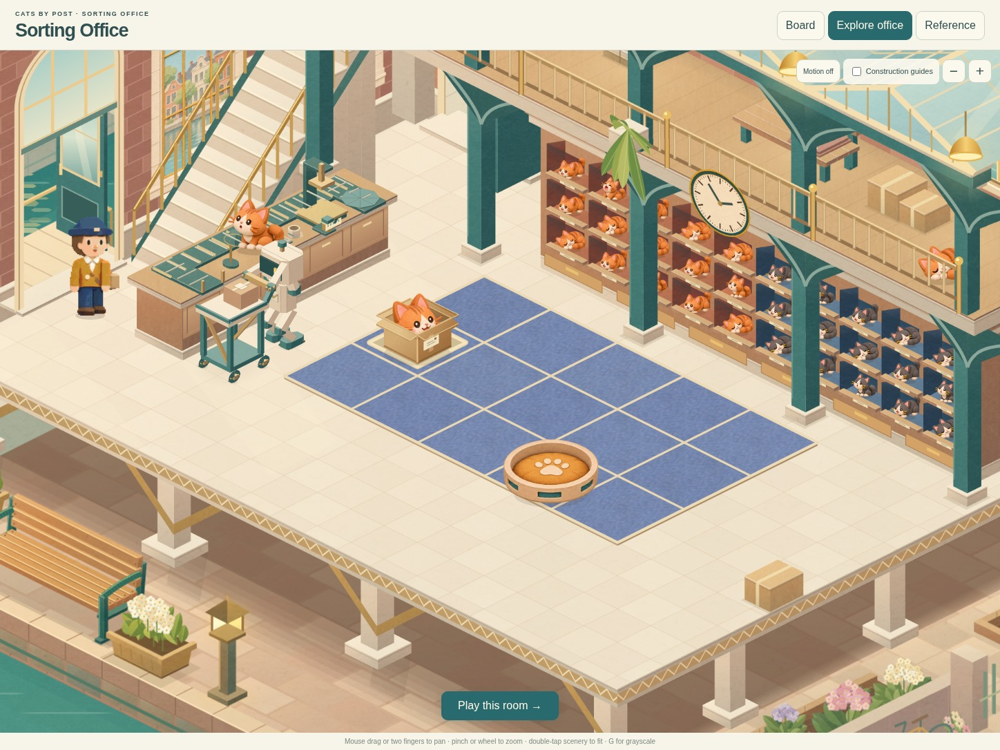

The postwoman and cubby cats return
The original human artwork returns with smooth walking, post and tea. Two residents leave their cubbies, explore, hop onto supported surfaces and return home. The robot keeps its parcel job.
One minute of the actual study, beginning four seconds into its ambient clock. No changes to gameplay timing.
The room at42seconds
Ginger exploring its cabinet bay
Blue claims a parcel perch
Checking her post
Tea beside the open entrance
Returning behind the pillar at58.13secondsRe-entering the cubby at58.14seconds
Independent routines share the room
Motion off: supported resting poses145 focused tests; 45 regular-interface wins and 894 cell picks across three viewport shapes; 30 study wins and 596 picks across desktop and phone. Chromium emulation, not a new physical Safari qualification.